from sklearn.cluster import KMeans
import matplotlib.pyplot as plt
from tqdm import tqdm
from katlas.core import *
import pandas as pd, numpy as np,seaborn as snsKmeans motifs
Kmeans
Data
# human = pd.read_parquet('raw/human_phosphoproteome.parquet')
# df_grouped = pd.read_parquet('raw/combine_source_grouped.parquet')
human = Data.get_human_site()
df_grouped = Data.get_ks_dataset()all_site = pd.concat([human,df_grouped])all_site.sub_site.isna().sum()np.int64(0)all_site = all_site.drop_duplicates('sub_site')all_site.shape(131843, 22)# all_site = all_site[['sub_site','site_seq']].drop_duplicates('sub_site')One-hot encode
from katlas.feature import *onehot = onehot_encode_df(all_site,'site_seq')CPU times: user 2.77 s, sys: 1.05 s, total: 3.82 s
Wall time: 3.65 sonehot.head()| -20A | -20C | -20D | -20E | -20F | -20G | -20H | -20I | -20K | -20L | ... | 20R | 20S | 20T | 20V | 20W | 20Y | 20_ | 20s | 20t | 20y | |
|---|---|---|---|---|---|---|---|---|---|---|---|---|---|---|---|---|---|---|---|---|---|
| 0 | 0.0 | 0.0 | 0.0 | 0.0 | 0.0 | 0.0 | 0.0 | 0.0 | 0.0 | 0.0 | ... | 1.0 | 0.0 | 0.0 | 0.0 | 0.0 | 0.0 | 0.0 | 0.0 | 0.0 | 0.0 |
| 1 | 0.0 | 0.0 | 0.0 | 0.0 | 0.0 | 0.0 | 0.0 | 0.0 | 0.0 | 0.0 | ... | 0.0 | 0.0 | 0.0 | 0.0 | 0.0 | 0.0 | 0.0 | 0.0 | 0.0 | 0.0 |
| 2 | 0.0 | 0.0 | 0.0 | 1.0 | 0.0 | 0.0 | 0.0 | 0.0 | 0.0 | 0.0 | ... | 0.0 | 0.0 | 0.0 | 0.0 | 0.0 | 0.0 | 0.0 | 0.0 | 0.0 | 0.0 |
| 3 | 0.0 | 0.0 | 0.0 | 1.0 | 0.0 | 0.0 | 0.0 | 0.0 | 0.0 | 0.0 | ... | 0.0 | 0.0 | 0.0 | 0.0 | 0.0 | 0.0 | 0.0 | 0.0 | 0.0 | 0.0 |
| 4 | 0.0 | 0.0 | 0.0 | 0.0 | 0.0 | 0.0 | 0.0 | 0.0 | 0.0 | 0.0 | ... | 0.0 | 0.0 | 0.0 | 0.0 | 0.0 | 0.0 | 0.0 | 0.0 | 0.0 | 0.0 |
5 rows × 967 columns
Elbow method
all_site.shape(131843, 19)sns.set(rc={"figure.dpi":300, 'savefig.dpi':300})
sns.set_context('notebook')
sns.set_style("ticks")get_clusters_elbow(onehot)CPU times: user 23min 20s, sys: 46.3 s, total: 24min 6s
Wall time: 9min 50s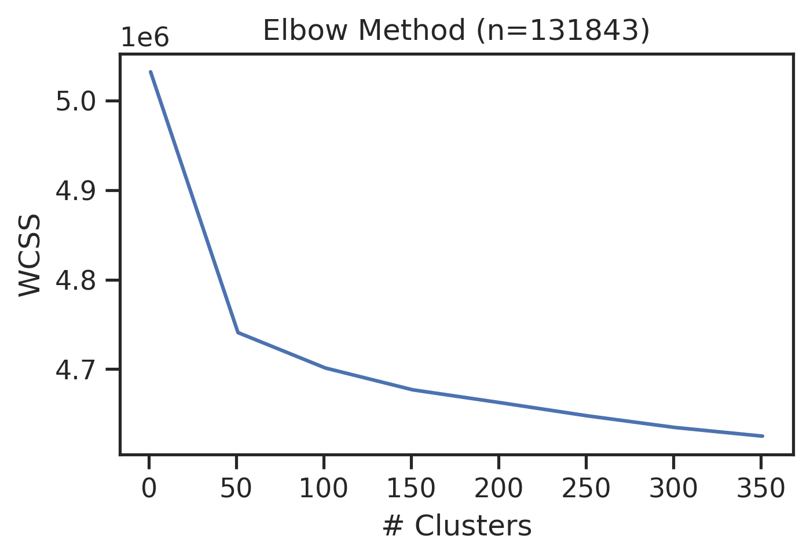
Kmeans
If using RAPIDS
# # pip install --extra-index-url=https://pypi.nvidia.com \"cudf-cu12==25.2.*\" \"cuml-cu12==25.2.*\"
# %load_ext cudf.pandas
# import numpy as np, pandas as pd
# from cuml import KMeans
# import matplotlib.pyplot as plt
# import seaborn as sns
# from tqdm import tqdm
# from katlas.core import *
# from katlas.plot import *def kmeans(onehot,n=2,seed=42):
kmeans = KMeans(n_clusters=n, random_state=seed,n_init='auto')
return kmeans.fit_predict(onehot)ncluster=[50,150,300]
seeds=[42,2025,28]all_site['test_id']=1get_cluster_pssms(all_site,'test_id')100%|██████████████████████████████████████████████████████████████████████████████████████████████| 1/1 [00:02<00:00, 2.04s/it]| -20P | -20G | -20A | -20C | -20S | -20T | -20V | -20I | -20L | -20M | ... | 20H | 20K | 20R | 20Q | 20N | 20D | 20E | 20pS | 20pT | 20pY | |
|---|---|---|---|---|---|---|---|---|---|---|---|---|---|---|---|---|---|---|---|---|---|
| 1 | 0.079841 | 0.066693 | 0.07291 | 0.013331 | 0.064879 | 0.040649 | 0.050503 | 0.034598 | 0.081195 | 0.01958 | ... | 0.021924 | 0.067816 | 0.063392 | 0.047306 | 0.033401 | 0.052386 | 0.079796 | 0.041843 | 0.013849 | 0.00508 |
1 rows × 943 columns
pssms=[]
for seed in seeds:
print('seed',seed)
for n in ncluster:
colname = f'cluster{n}_seed{seed}'
print(colname)
all_site[colname] = kmeans(onehot,n=n,seed=seed)
pssm_df = get_cluster_pssms(all_site,colname,count_thr=40) # count threshold 40, no threshold for non-nan
pssm_df.index =colname+'_'+pssm_df.index.astype(str)
pssms.append(pssm_df)seed 42
cluster50_seed42100%|████████████████████████████████████████████████████████████████████████████████████████████| 50/50 [00:02<00:00, 17.56it/s]cluster150_seed42100%|██████████████████████████████████████████████████████████████████████████████████████████| 150/150 [00:04<00:00, 33.82it/s]cluster300_seed42100%|██████████████████████████████████████████████████████████████████████████████████████████| 300/300 [00:06<00:00, 44.38it/s]seed 2025
cluster50_seed2025100%|████████████████████████████████████████████████████████████████████████████████████████████| 50/50 [00:03<00:00, 14.55it/s]cluster150_seed2025100%|██████████████████████████████████████████████████████████████████████████████████████████| 150/150 [00:05<00:00, 25.90it/s]cluster300_seed2025100%|██████████████████████████████████████████████████████████████████████████████████████████| 300/300 [00:06<00:00, 43.78it/s]seed 28
cluster50_seed28100%|████████████████████████████████████████████████████████████████████████████████████████████| 50/50 [00:02<00:00, 17.59it/s]cluster150_seed28100%|██████████████████████████████████████████████████████████████████████████████████████████| 150/150 [00:05<00:00, 28.48it/s]cluster300_seed28100%|██████████████████████████████████████████████████████████████████████████████████████████| 300/300 [00:06<00:00, 43.73it/s]pssms = pd.concat(pssms,axis=0)Save:
# pssms.to_parquet('raw/kmeans.parquet')
# all_site.to_parquet('raw/kmeans_site.parquet',index=False)import pandas as pd
from katlas.pssm import *
from functools import partialpssms = pd.read_parquet('raw/kmeans.parquet')
all_site=pd.read_parquet('raw/kmeans_site.parquet')def get_surrounding_max(r):
return float(recover_pssm(r).drop(columns=[0]).max().max())# def get_surrounding_IC(r):
# return max(get_IC_per_position_flat(r,exclude_zero=True))
# ICs = pssms.apply(get_surrounding_IC,axis=1)
# ICs.hist(bins=50) # if all aa in a position is 0, the IC is max
# pssms = pssms.loc[ICs>=2.2]max_val = pssms.apply(get_surrounding_max,axis=1)max_val.hist(bins=50)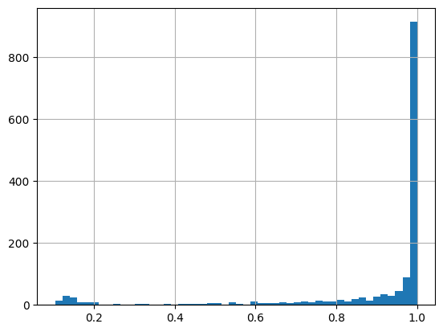
len(pssms) # before filtering1476pssms = pssms.loc[max_val>=0.4]pssms.shape # after(1363, 943)Hierarchical clustering
Hierarchical clustering of all pssms
from scipy.cluster.hierarchy import linkage, fcluster,dendrogramimport pandas as pd
from katlas.core import *# pssms = pd.read_parquet('raw/kmeans.parquet')Z = get_Z(pssms)labels= get_pssm_seq_labels(pssms,thr=0.3)plot_dendrogram?Signature: plot_dendrogram(Z, color_thr=0.07, dense=7, line_width=1, **kwargs) Docstring: <no docstring> File: ~/git/KATLAS/katlas/katlas/clustering.py Type: function
plot_dendrogram(Z,color_thr=0.05, labels=labels)
save_pdf('dendrogram.pdf')
plt.close()Visualize and find out the color threshold that works.
After determine the color threshold, use it to cut the tree.
Visualize some logos
plot_logos_idx(pssms, 'cluster50_seed42_32','cluster300_seed2025_212')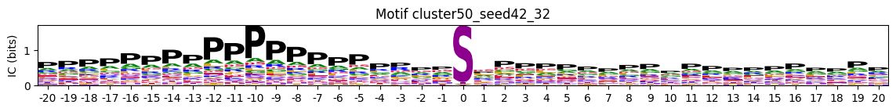
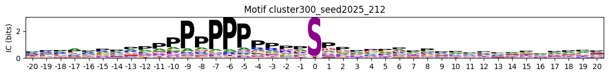
Cut trees to merge similar pssms
labels = fcluster(Z, t=0.05, criterion='distance')
# pssm_df['cluster'] = labelslen(labels)1363np.unique(labels)[:10] # always start from 1array([ 1, 2, 3, 4, 5, 6, 7, 8, 9, 10], dtype=int32)Expand the cluster into a single column
id_vars = ['sub_site', 'site_seq']
value_vars = [col for col in all_site.columns if col.startswith('cluster')]all_site_long = pd.melt(all_site, id_vars=id_vars, value_vars=value_vars, var_name='cluster_info', value_name='cluster')all_site_long['cluster_id']=all_site_long['cluster_info'] + '_' + all_site_long['cluster'].astype(str)all_site_long.head()| sub_site | site_seq | cluster_info | cluster | cluster_id | |
|---|---|---|---|---|---|
| 0 | A0A024R4G9_S20 | _MTVLEAVLEIQAITGSRLLsMVPGPARPPGSCWDPTQCTR | cluster50_seed42 | 33 | cluster50_seed42_33 |
| 1 | A0A075B6Q4_S24 | QKSENEDDSEWEDVDDEKGDsNDDYDSAGLLsDEDCMSVPG | cluster50_seed42 | 41 | cluster50_seed42_41 |
| 2 | A0A075B6Q4_S35 | EDVDDEKGDsNDDYDSAGLLsDEDCMSVPGKTHRAIADHLF | cluster50_seed42 | 30 | cluster50_seed42_30 |
| 3 | A0A075B6Q4_S57 | EDCMSVPGKTHRAIADHLFWsEETKSRFTEYsMTssVMRRN | cluster50_seed42 | 30 | cluster50_seed42_30 |
| 4 | A0A075B6Q4_S68 | RAIADHLFWsEETKSRFTEYsMTssVMRRNEQLTLHDERFE | cluster50_seed42 | 11 | cluster50_seed42_11 |
# all_site_long.to_parquet('raw/kmeans_site_long.parquet',index=False)Map merged cluster
len(labels)1363max(labels)np.int32(467)cluster_map = pd.Series(labels,index=pssms.index)cluster_map.sort_values()index
cluster150_seed42_123 1
cluster150_seed2025_23 1
cluster300_seed28_273 2
cluster50_seed28_10 3
cluster150_seed2025_61 3
...
cluster150_seed28_117 464
cluster300_seed2025_293 464
cluster300_seed42_208 465
cluster300_seed42_122 466
cluster150_seed28_135 467
Length: 1363, dtype: int32For those unmapped cluster_ID, we assign them zero value:
# not all cluster_id have a corresponding for new cluster ID, as they could be filtered out
all_site_long['cluster_new'] = all_site_long.cluster_id.map(lambda x: cluster_map.get(x, 0)) #0 is unmapped# all_site_long.to_parquet('raw/kmeans_site_long_cluster_new.parquet',index=False)Get new cluster motifs
pssms2 = get_cluster_pssms(all_site_long,
'cluster_new')100%|██████████████████████████████████████████████████████████████████████████████████████████| 468/468 [00:17<00:00, 26.74it/s]Note here we didn’t put count threshold here, the default is 10
pssms2.shape(468, 943)pssms2 = pssms2.drop(index=0) # as 0 represents unmapped# pssms2.to_parquet('out/all_site_pssms.parquet') # the index order is from count high to count low# pssms2 =pd.read_parquet('out/all_site_pssms.parquet')Hierarchical clustering of merged pssms
Z2 = get_Z(pssms2)Note that a sub site may have multiple cluster_new ID, so we need to drop duplicates to get correct value counts
count_map = all_site_long.drop_duplicates(subset=["cluster_new","sub_site"])["cluster_new"].value_counts()count_mapcluster_new
0 50197
25 7951
70 6831
207 6182
411 6116
...
467 53
2 51
466 49
394 49
393 41
Name: count, Length: 468, dtype: int64# this is incorrect
# cluster_cnt = all_site_long.cluster_new.value_counts()labels= get_pssm_seq_labels(pssms2,count_map = count_map , thr=0.3)labels[:4]['25 (n=7,951): ....................s*P...................',
'70 (n=6,831): ....................s*.sP.................',
'207 (n=6,182): .................R..s*....................',
'411 (n=6,116): ....................t*P...................']plot_dendrogram(Z2,labels=labels,color_thr=0.07)
save_pdf('raw/dendrogram.pdf')
save_svg('raw/human_motif_dendrogram.svg')
plt.close()Onehot of cluster number
# all_site_long = pd.read_parquet('raw/kmeans_site_long.parquet')all_site_long['sub_site_seq'] = all_site_long['sub_site']+'_'+all_site_long['site_seq']all_site_onehot = pd.crosstab(all_site_long['sub_site_seq'], all_site_long['cluster_new'])# greater than 0 to be True and convert to int
all_site_onehot = all_site_onehot.gt(0).astype(int)all_site_onehot.max()cluster_new
0 1
1 1
2 1
3 1
4 1
..
463 1
464 1
465 1
466 1
467 1
Length: 468, dtype: int64# remove 0 as it is unassigned for cut tree
all_site_onehot = all_site_onehot.drop(columns=0)all_site_onehot.sum().sort_values()cluster_new
393 41
394 49
466 49
2 51
467 53
...
55 5881
411 6116
207 6182
70 6831
25 7951
Length: 467, dtype: int64# for save in parquet, needs column type to be str
all_site_onehot.columns = all_site_onehot.columns.astype(str)# all_site_onehot.to_parquet('out/all_site_cluster_onehot.parquet')# all_site_onehot=pd.read_parquet('out/all_site_cluster_onehot.parquet')all_site_onehot| cluster_new | 1 | 2 | 3 | 4 | 5 | 6 | 7 | 8 | 9 | 10 | ... | 458 | 459 | 460 | 461 | 462 | 463 | 464 | 465 | 466 | 467 |
|---|---|---|---|---|---|---|---|---|---|---|---|---|---|---|---|---|---|---|---|---|---|
| sub_site_seq | |||||||||||||||||||||
| A0A024R4G9_S20__MTVLEAVLEIQAITGSRLLsMVPGPARPPGSCWDPTQCTR | 0 | 0 | 0 | 0 | 0 | 0 | 0 | 0 | 0 | 0 | ... | 0 | 0 | 0 | 0 | 0 | 0 | 0 | 0 | 0 | 0 |
| A0A075B6Q4_S24_QKSENEDDSEWEDVDDEKGDsNDDYDSAGLLsDEDCMSVPG | 0 | 0 | 0 | 0 | 0 | 0 | 0 | 0 | 0 | 0 | ... | 0 | 0 | 0 | 0 | 0 | 0 | 0 | 0 | 0 | 0 |
| A0A075B6Q4_S35_EDVDDEKGDsNDDYDSAGLLsDEDCMSVPGKTHRAIADHLF | 0 | 0 | 0 | 0 | 0 | 0 | 0 | 0 | 0 | 0 | ... | 0 | 0 | 0 | 0 | 0 | 0 | 0 | 0 | 0 | 0 |
| A0A075B6Q4_S57_EDCMSVPGKTHRAIADHLFWsEETKSRFTEYsMTssVMRRN | 0 | 0 | 0 | 0 | 0 | 0 | 0 | 0 | 0 | 0 | ... | 0 | 0 | 0 | 0 | 0 | 0 | 0 | 0 | 0 | 0 |
| A0A075B6Q4_S68_RAIADHLFWsEETKSRFTEYsMTssVMRRNEQLTLHDERFE | 0 | 0 | 0 | 0 | 0 | 0 | 0 | 0 | 0 | 0 | ... | 0 | 0 | 0 | 0 | 0 | 0 | 0 | 0 | 0 | 0 |
| ... | ... | ... | ... | ... | ... | ... | ... | ... | ... | ... | ... | ... | ... | ... | ... | ... | ... | ... | ... | ... | ... |
| V9GYY5_S132_RLLGLtPPEGGAGDRsEEEAsstEKPtKALPRKSRDPLLSQ | 0 | 0 | 0 | 0 | 0 | 0 | 0 | 0 | 0 | 0 | ... | 0 | 0 | 0 | 0 | 0 | 0 | 0 | 0 | 0 | 0 |
| V9GYY5_S133_LLGLtPPEGGAGDRsEEEAsstEKPtKALPRKSRDPLLSQR | 0 | 0 | 0 | 0 | 0 | 0 | 0 | 0 | 0 | 0 | ... | 0 | 0 | 0 | 0 | 0 | 0 | 0 | 0 | 0 | 0 |
| V9GYY5_T117_TVTVTTISDLDLsGARLLGLtPPEGGAGDRsEEEAsstEKP | 0 | 0 | 0 | 0 | 0 | 0 | 0 | 0 | 0 | 0 | ... | 0 | 0 | 0 | 0 | 0 | 0 | 0 | 0 | 0 | 0 |
| V9GYY5_T134_LGLtPPEGGAGDRsEEEAsstEKPtKALPRKSRDPLLSQRI | 0 | 0 | 0 | 0 | 0 | 0 | 0 | 0 | 0 | 0 | ... | 0 | 0 | 0 | 0 | 0 | 0 | 0 | 0 | 0 | 0 |
| V9GYY5_T138_PPEGGAGDRsEEEAsstEKPtKALPRKSRDPLLSQRISSLT | 0 | 0 | 0 | 0 | 0 | 0 | 0 | 0 | 0 | 0 | ... | 0 | 0 | 0 | 0 | 0 | 0 | 0 | 0 | 0 | 0 |
131843 rows × 467 columns
# switch back to int for downstream
all_site_onehot.columns = all_site_onehot.columns.astype(int)import numpy as np
def get_entropy(pssm_df,# a dataframe of pssm with index as aa and column as position
return_min=False, # return min entropy as a single value or return all entropy as a pd.series
exclude_zero=False, # exclude the column of 0 (center position) in the entropy calculation
clean_zero=True, # if true, zero out non-last three values in position 0 (keep only s,t,y values at center)
):
"Calculate entropy per position of a PSSM surrounding 0. The less entropy the more information it contains."
pssm_df = pssm_df.copy()
pssm_df.columns= pssm_df.columns.astype(int)
if 0 in pssm_df.columns:
if clean_zero:
pssm_df.loc[pssm_df.index[:-3], 0] = 0
if exclude_zero:
# remove columns starts with zero and columns with interger name 0
cols_to_drop = [col for col in pssm_df.columns
if col == 0 or (isinstance(col, str) and col.startswith('0'))]
if cols_to_drop: pssm_df = pssm_df.drop(columns=cols_to_drop)
pssm_df = pssm_df/pssm_df.sum()
per_position = -np.sum(pssm_df * np.log2(pssm_df + EPSILON), axis=0)
per_position[pssm_df.sum() == 0] = 0
return float(per_position.min()) if return_min else per_position
def get_IC(pssm_df,**kwargs):
"""
Calculate the information content (bits) from a frequency matrix,
using log2(3) for the middle position and log2(len(pssm_df)) for others.
The higher the more information it contains.
"""
entropy_position = get_entropy(pssm_df,**kwargs)
max_entropy_array = pd.Series(np.log2(len(pssm_df)), index=entropy_position.index)
# set exclude_zero to False
exclude_zero = kwargs.get('exclude_zero', False)
if exclude_zero is False: max_entropy_array[0] = np.log2(3)
# information_content = max_entropy - entropy --> log2(N) - entropy
IC_position = max_entropy_array - entropy_position
# if entropy is zero, set to zero as there's no value
IC_position[entropy_position == 0] = 0
return IC_position
def get_IC_flat(flat_pssm:pd.Series,**kwargs):
"""Calculate the information content (bits) from a flattened pssm pd.Series,
using log2(3) for the middle position and log2(len(pssm_df)) for others."""
pssm_df = recover_pssm(flat_pssm)
return get_IC(pssm_df,**kwargs)Special motifs
# pssms2 = pd.read_parquet(
# all_site_onehot = pd.read_parquet(Customized
plot_logos_idx(pssms2,446,445,402,444,404)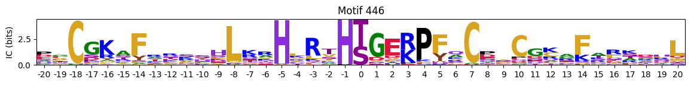
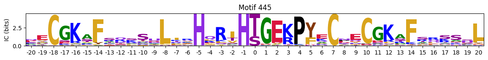
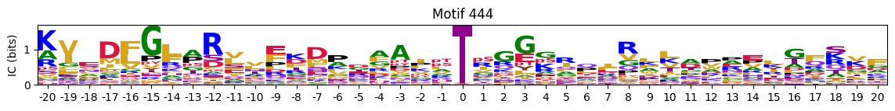
Most common
cluster_cnt = all_site_onehot.sum()# idxs = cluster_cnt.sort_values(ascending=False).head(10).index
# idxscddm=pd.read_parquet('out/CDDM_pssms.parquet')cddm = preprocess_ref(cddm)cddm['2s'].sort_values()index
Q9NYV4_CDK12 0.020833
O00444_PLK4 0.024390
Q9H2G2_SLK 0.027397
O43683_BUB1 0.030000
O43293_DAPK3 0.033333
...
Q9UK32_RPS6KA6 0.226829
P51812_RPS6KA3 0.229333
P23443_RPS6KB1 0.242268
Q96RG2_PASK 0.250000
Q9UBS0_RPS6KB2 0.284916
Name: 2s, Length: 335, dtype: float64cddm['-3s'].sort_values()index
O43293_DAPK3 0.000000
P22612_PRKACG 0.013889
P19525_EIF2AK2 0.018182
P35626_GRK3 0.019608
P52564_MAP2K6 0.022222
...
Q15835_GRK1 0.163043
P49674_CSNK1E 0.170792
P48729_CSNK1A1 0.182965
Q99640_PKMYT1 0.215686
Q99986_VRK1 0.220000
Name: -3s, Length: 335, dtype: float64plot_logos(pssms2.head(10),count_dict=cluster_cnt)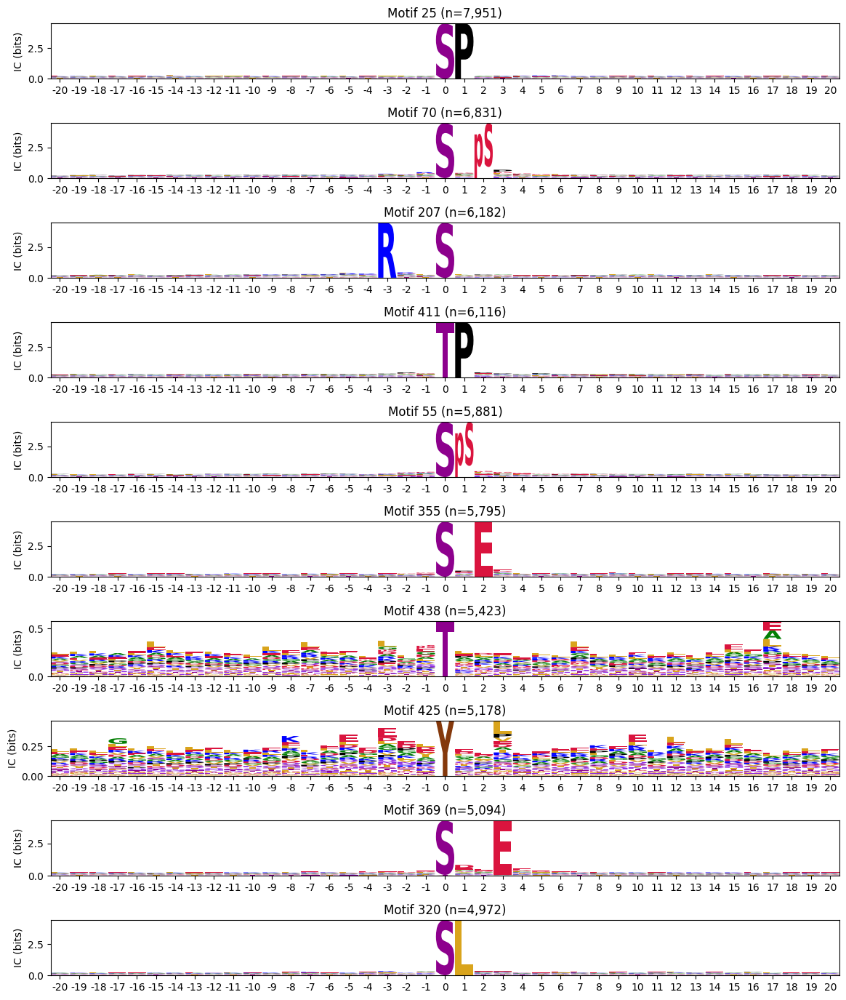
Most common y
pssms_y = pssms2[pssms2['0pY']>0.3].copy()idxs_y = pssms_y.indexplot_logos(pssms2.loc[idxs_y],count_dict=cluster_cnt)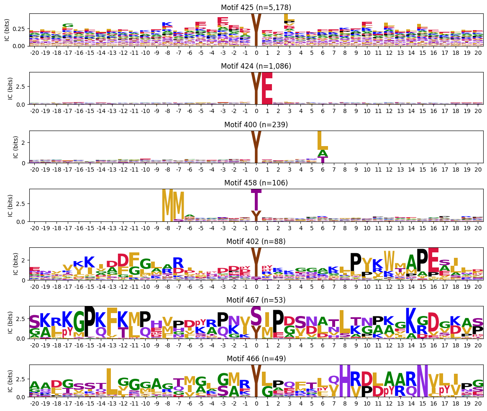
Highest IC sum
ICs = pssms2.apply(lambda r: sum(get_IC_flat(r)) ,axis=1)idxs=ICs.sort_values(ascending=False).head(20).indexThe first one is mostly Zinc finger protein
plot_logos(pssms2.loc[idxs],count_dict=cluster_cnt)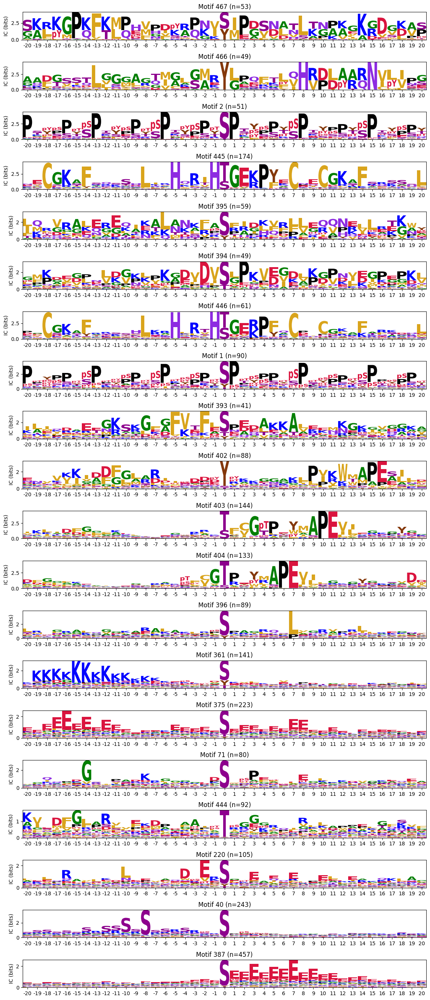
C-terminal motifs
zeros_right = pssms2.apply(lambda r: (recover_pssm(r).loc[:,1:].sum()==0).sum() , axis=1)zeros_right_idxs = zeros_right[zeros_right>0].indexzeros_right_idxsIndex([288, 399, 397, 400, 398, 401], dtype='int64')plot_logos(pssms2.loc[zeros_right_idxs],count_dict=cluster_cnt)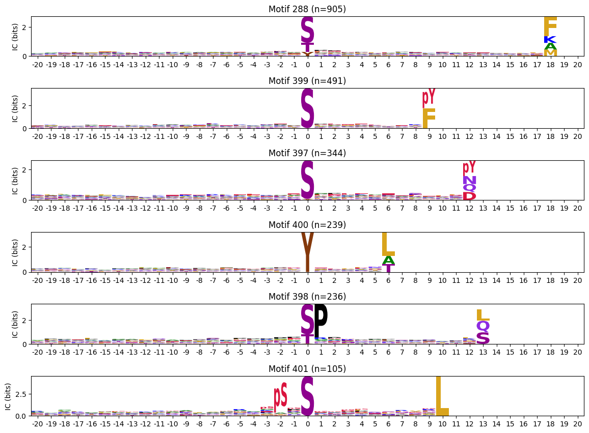
N-Terminal motifs:
zeros_left = pssms2.apply(lambda r: (recover_pssm(r).loc[:,:0].sum()==0).sum() , axis=1)zeros_left_idxs = zeros_left[zeros_left>0].indexidxs = zeros_left_idxs[:10]# zeros = pssms2.apply(lambda r: (recover_pssm(r).sum()==0).sum() , axis=1)
# idxs = zeros.sort_values(ascending=False).head(10).indexplot_logos(pssms2.loc[idxs],count_dict=cluster_cnt)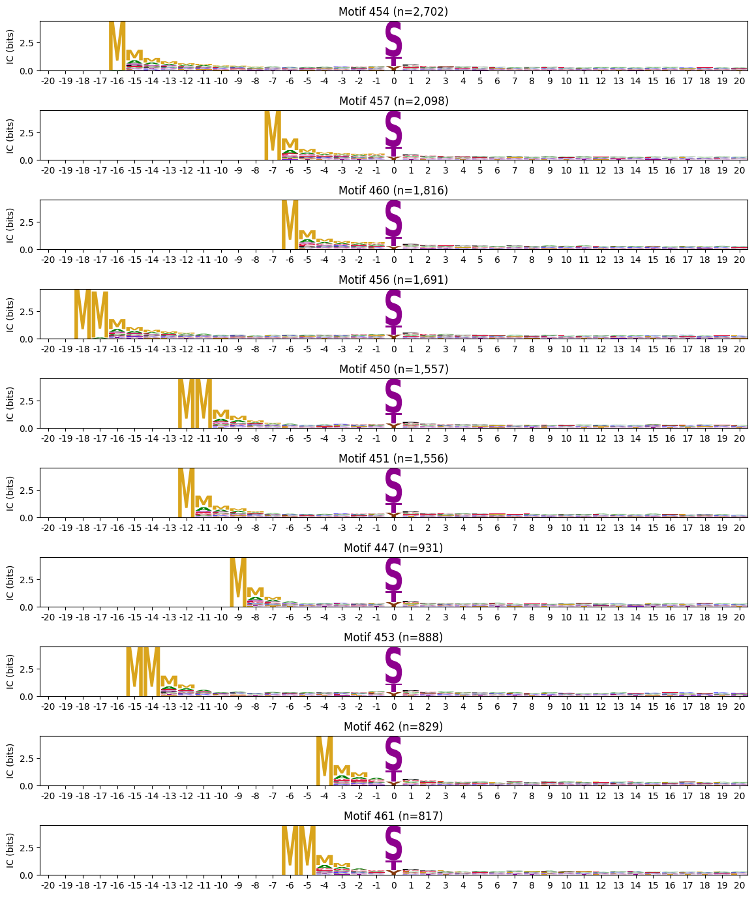